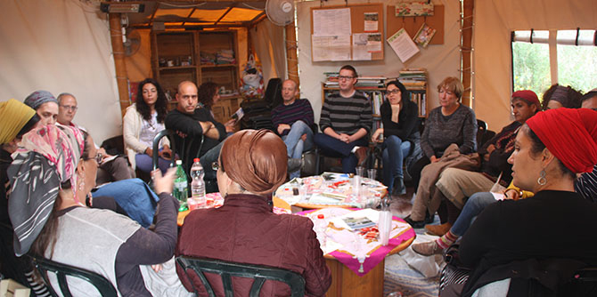

במהלך היומיים נפגשנו עם "מוחים" בנושאים חשובים ורלוונטיים גם לאזורנו, המקדמים ושואפים להוביל שינויים ויוזמות בתחומי תרבות ואמנות, יחסי יהודים-ערבים, מניעת בנייה בשטחים פתוחים, פיתוח ריאות ירוקות עירוניות וקידום איכות חיים רב-תחומית בעיר ובמרחב כולו.
הריטריט התבסס על למידה המחברת בין תיאוריה לפרקטיקה. בתור הכנה לריטריט התבקשו המשתתפים לקרוא שני מאמרים תאורטיים בנושא: מאמרו של אבנר דה שליט "עשרה דברות לכישלון חרוץ במסע הסברה אקולוגי", ומאמרו של איתן אלימי "לקרוא לילד בשמו: על הדומה (והשונה) בין תנועות חברתיות וקבוצות אינטרס". הרצאתה של ד"ר נועה מילמן במפגש הפתיחה, שהתקיים בפאתי ירושלים, נשענה על המושגים שהופיעו במאמרים, ואלה ליוו אותנו במהלך היומיים וסייעו להבין כיצד מחאות עובדות (או לא), מה עובד יותר ומה פחות.
הריטריט כלל גם למידה דרך סדנאות התנסותיות: סדנת שירת היפ הופ בפרויקט התרבות "המפעל" בהנחיית המשורר אמיר מנשהוף, וסדנת צילום בהנחיית אמנים מבית הספר לצילום בשכונת מוסררה.
במהלך חודש מאי יתקיים מפגש המשך לריטריט, בהנחיית ד"ר נועה מילמן. תהיה זו הזדמנות לבוגרים המתעניינים בנושא ולבוגרים המובילים מחאות במרחב להמשיך ולבחון בראי התיאוריה מחאות במובנן הרחב ככלי להובלת שינוי.

{kind=link}